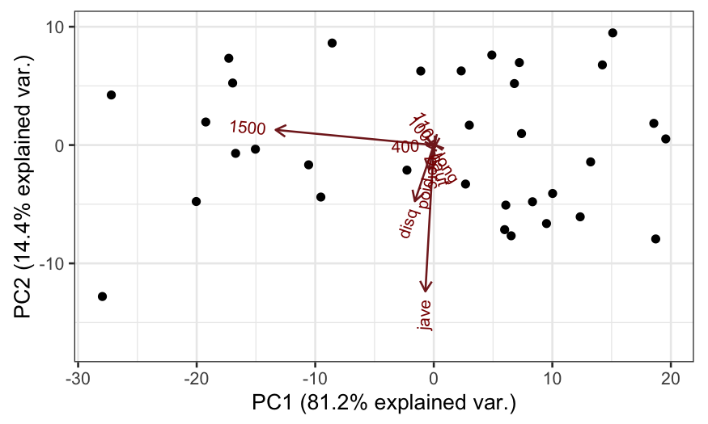
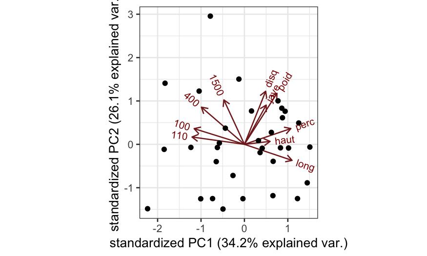

Julia Fukuyama
March 16, 2021
Today: PCA
Intuition
Math
Examples
Suppose we have a 3-dimensional object that we want to investigate.
Due to some strange set of constraints, we are only allowed to see its shadow.
Without knowing anything about the object, what sort of a shadow would you expect to be most useful?

It seems like the most useful shadow is the biggest one: If we were only allowed one view, we would ask for the one that took up the most space.
It’s easy to come up with examples where this isn’t the most useful, but it’s a good place to start if you don’t know anything about the data.
The same will be true of PCA.
In PCA, we have a data matrix \(\mathbf X \in \mathbb R^{n \times p}\) with centered columns.
We think of the rows of \(\mathbf X\) as points in \(p\)-dimensional space, and we want to project the points down into a lower-dimensional space so we can visualize them.
There are a lot of different ways we could do this, but in PCA we want to find the projection that maximizes the variance of the projected points.
First consider projecting the points onto a line.
The PCA problem is to find \[ \mathbf w_{(1)} = \text{arg max}_{\mathbf w : \|\mathbf w \| = 1} \sum_{i=1}^n (\mathbf x_i \cdot \mathbf w)^2 \] where \(\mathbf x_i\) is the \(i\)th row of \(\mathbf X\).
\(\mathbf w_{(1)}\) is then the first principal component.
If we want projections into higher-dimensional spaces, we take more principal components.
We find the \(k\)th principal component as \[ \mathbf w_{(k)} = \text{arg max}_{\mathbf w :\| \mathbf w \| = 1, \mathbf w^T \mathbf w_{(j)} = 0, j = 1, \ldots, k-1} \sum_{i=1}^n (\mathbf x_i \cdot \mathbf w)^2 \]
The constraint that \(\mathbf w^T \mathbf w_{(k)} = 0, j = 1,\ldots, k-1\) means that the \(k\)th principal component is orthogonal to all the previous principal components, and is needed to ensure a unique solution to the problem.
The solution to the PCA is given by the SVD.
If \(\mathbf X\) has centered columns and \(\mathbf X = \mathbf U \mathbf D \mathbf V^T\) is the SVD of \(\mathbf X\), then
The \(k\)th principal component is the \(k\)th column of \(\mathbf V\).
The projections of the points onto the \(k\)th principal component are given by the \(k\)th column of \(\mathbf U \mathbf D\).
Olympic dataset
## 100 long poid haut
## Min. :10.62 Min. :6.220 Min. :10.27 Min. :1.790
## 1st Qu.:11.02 1st Qu.:7.000 1st Qu.:13.15 1st Qu.:1.940
## Median :11.18 Median :7.090 Median :14.12 Median :1.970
## Mean :11.20 Mean :7.133 Mean :13.98 Mean :1.983
## 3rd Qu.:11.43 3rd Qu.:7.370 3rd Qu.:14.97 3rd Qu.:2.030
## Max. :11.57 Max. :7.720 Max. :16.60 Max. :2.270
## 400 110 disq perc
## Min. :47.44 Min. :14.18 Min. :34.36 Min. :4.000
## 1st Qu.:48.34 1st Qu.:14.72 1st Qu.:39.08 1st Qu.:4.600
## Median :49.15 Median :15.00 Median :42.32 Median :4.700
## Mean :49.28 Mean :15.05 Mean :42.35 Mean :4.739
## 3rd Qu.:49.98 3rd Qu.:15.38 3rd Qu.:44.80 3rd Qu.:4.900
## Max. :51.28 Max. :16.20 Max. :50.66 Max. :5.700
## jave 1500
## Min. :49.52 Min. :256.6
## 1st Qu.:55.42 1st Qu.:266.4
## Median :59.48 Median :272.1
## Mean :59.44 Mean :276.0
## 3rd Qu.:64.00 3rd Qu.:286.0
## Max. :72.60 Max. :303.2## PC1 PC2
## 100 -0.0045042348 0.005632863
## long 0.0084964324 -0.013772028
## poid -0.0294931259 -0.155510542
## haut 0.0007153041 -0.002667193
## 400 -0.0455887408 -0.001324105
## 110 -0.0050441978 0.010836485
## disq -0.1184059716 -0.352166545
## perc 0.0003427802 -0.019704006
## jave -0.0525411029 -0.917592971
## 1500 -0.9900266310 0.095301595Two types of biplots, form and covariance. Let’s start off with the form biplot.
For each sample we plot a point with the sample scores along the principal axes.
For each variable, we make an arrow with the variable weights along the principal axes.
This allows us to read off the sample scores along the principal axes and the variable weights along the principal axes.
However, there’s another way to interpret the PCA biplot:
Since the PCA solution is given by the SVD, the biplot is the same as the reduced-rank biplot (up to choices of how to scale the biplot points and biplot axes).
In particular, the form biplot is a reduced-rank biplot where we use \(\mathbf U_{(2)} \mathbf D_{(2)}\) to plot the biplot points, and \(\mathbf V_{(2)}\) to plot the biplot axes.
Therefore, we can read the PCA biplot as giving us an approximation to the centered data matrix \(\mathbf X\)

The covariance biplot is very subtly different from the form biplot, the difference being how the singular values are allocated.
In the covariance biplot, we use
\(\mathbf U_{(2)}\) for the biplot points
\(\mathbf V_{(2)} \mathbf D_{(2)}\) for the biplot axes.
In this form of the biplot, angles between biplot axes give us approximations of the covariances.
Why is this?
Following up on what we talked about regarding correlations between variables, note the following two relationships:
If \(\mathbf X\) has centered columns, then \(\mathbf X \mathbf X^T\) is the sample covariance matrix.
If \(\mathbf X = \mathbf U \mathbf D \mathbf V^T\), then \(\mathbf X \mathbf X^T = \mathbf V \mathbf D^2 \mathbf V^T\).
Therefore, the columns of \(\mathbf V \mathbf D\) can be seen as giving us both biplot points and biplot axes for approximating the covariance matrix, and projections of one biplot axis onto another biplot axis tells us about the covariance between the two variables.
The example above suggests that doing PCA when the variables are on different scales isn’t always that useful.
When the variables are on different scales and measure different things, we often standardize the columns of \(\mathbf X\) (divide each column by its standard deviation) before performing PCA.
This is sometimes referred to as correlation-based PCA, as opposed to covariance-based PCA.
Analogous to the covariance-based PCA biplot:
Sample points represent the scores on the principal axes.
Variable points represent variable weights on the principal axes.
Interpretation as a reduced-rank biplot:
Correlation-based PCA biplot is just a reduced-rank biplot approximating a centered and scaled data matrix.
We still have biplot points and axes, and they describe the elements of the centered and scaled data matrix.
Relationships between the variables:
Covariance PCA biplot based on correlations, with some extra information:
oly_scale = prcomp(olympic$tab, scale. = TRUE)
## scale = 1 means covariance biplot
ggbiplot(oly_scale, scale = 1)
How would you interpret the first principal component?
Covariance PCA biplot based on correlations, with some extra information:
## scale = 1 means covariance biplot
ggbiplot(oly_scale, scale = 1) +
geom_point(aes(color = olympic$score)) +
scale_color_viridis("Score")
Wine dataset
## [1] 178## Alcohol MalicAcid Ash AlcAsh
## Min. :11.03 Min. :0.740 Min. :1.360 Min. :10.60
## 1st Qu.:12.36 1st Qu.:1.603 1st Qu.:2.210 1st Qu.:17.20
## Median :13.05 Median :1.865 Median :2.360 Median :19.50
## Mean :13.00 Mean :2.336 Mean :2.367 Mean :19.49
## 3rd Qu.:13.68 3rd Qu.:3.083 3rd Qu.:2.558 3rd Qu.:21.50
## Max. :14.83 Max. :5.800 Max. :3.230 Max. :30.00
## Mg Phenols Flav NonFlavPhenols
## Min. : 70.00 Min. :0.980 Min. :0.340 Min. :0.1300
## 1st Qu.: 88.00 1st Qu.:1.742 1st Qu.:1.205 1st Qu.:0.2700
## Median : 98.00 Median :2.355 Median :2.135 Median :0.3400
## Mean : 99.74 Mean :2.295 Mean :2.029 Mean :0.3619
## 3rd Qu.:107.00 3rd Qu.:2.800 3rd Qu.:2.875 3rd Qu.:0.4375
## Max. :162.00 Max. :3.880 Max. :5.080 Max. :0.6600
## Proa Color Hue OD
## Min. :0.410 Min. : 1.280 Min. :0.4800 Min. :1.270
## 1st Qu.:1.250 1st Qu.: 3.220 1st Qu.:0.7825 1st Qu.:1.938
## Median :1.555 Median : 4.690 Median :0.9650 Median :2.780
## Mean :1.591 Mean : 5.058 Mean :0.9574 Mean :2.612
## 3rd Qu.:1.950 3rd Qu.: 6.200 3rd Qu.:1.1200 3rd Qu.:3.170
## Max. :3.580 Max. :13.000 Max. :1.7100 Max. :4.000
## Proline
## Min. : 278.0
## 1st Qu.: 500.5
## Median : 673.5
## Mean : 746.9
## 3rd Qu.: 985.0
## Max. :1680.0## PC1 PC2
## Alcohol -0.144329395 0.483651548
## MalicAcid 0.245187580 0.224930935
## Ash 0.002051061 0.316068814
## AlcAsh 0.239320405 -0.010590502
## Mg -0.141992042 0.299634003
## Phenols -0.394660845 0.065039512
## Flav -0.422934297 -0.003359812
## NonFlavPhenols 0.298533103 0.028779488
## Proa -0.313429488 0.039301722
## Color 0.088616705 0.529995672
## Hue -0.296714564 -0.279235148
## OD -0.376167411 -0.164496193
## Proline -0.286752227 0.364902832## PC1 PC2
## [1,] -3.307421 1.4394023
## [2,] -2.203250 -0.3324551
## [3,] -2.509661 1.0282507
## [4,] -3.746497 2.7486184
## [5,] -1.006070 0.8673840
## [6,] -3.041674 2.1164309
## [7,] -2.442201 1.1715453
## [8,] -2.053644 1.6044371
## [9,] -2.503811 0.9154885
## [10,] -2.745882 0.7872170